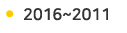
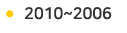
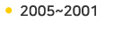
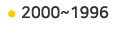

회사 연혁
CJ E&M는 한국 영화와 함께 성장하고 있습니다.
t가 걸어온 길, 한국 영화 역사와 함께 나아가겠습니다.
-
- 
-
2016.06 tvN [시그널] 2016 백상예술대상 드라마작품상
tvN [렛츠고 시간탐험대] 중국판 시즌 2 중국 사천위성 방영
otvN [렛미인] 태국판 시즌2 Workpoint 판매
chCGV 'chCGV 브랜드 ID' PromaxBDA 골드 수상
2016.04 서울 OGN e스타디움 개관
CJ E&M- ESG 공동기획, 제작 프로그램 계약 체결
2016.03 tvN [응답하라1988] 2016 케이블TV방송대상 드라마부문 대상
tvN 2016 케이블TV방송대상 채널부문 대상
tvN [꽃보다누나] 중국 동방위성 시즌2 방영 (2015년 3월 시즌 1 방영)
2016.01 tvN [응답하라1988] 제15회 대한민국 국회대상 콘텐츠 드라마 부문
2015.12 tvN [응답하라1988] 미래창조과학부, KOREA UHD Awards 작품상(드라마/TV영화부문)
tvN [미생(김원석PD)] 2015 대한민국콘텐츠대상 드라마부문 대통령표창
tvN [미생] 아시안TV어워즈(ATA) 아시아 최고 드라마상
tvN [더 지니어스] 아시안TV어워즈(ATA) 최고의 게임,퀴즈 프로그램상
tvN [삼시세끼 어촌편] 대한민국 콘텐츠대상 문체부 장관상
OCN [나쁜녀석들] 예고편 Promax Asia 실버 수상
chCGV '당신의 블롣버스터는 무엇입니까?' 브랜딩 ID Promax Asia 골드 수상
chCGV '아티스트 콜라보레이션' 여름 브랜딩 ID Promax Asia 골드 수상
2015.10 tvN [미생] 제8회 코리아드라마어워즈 작품상
tvN [더 지니어스] 네델란드, 핀란드, 독일 옵션 계약 판매 및 영국 ITV와 포맷 계약
2015.09 tvN [미생] 제10회 서울드라마어워즈 최우수작품상(미니시리즈)
'진짜 사는 재미' 대한민국 최초 라이프 엔터테인먼트 채널 'O tvN' 런칭
2015.07 tvN [렛츠고 시간탐험대]중국 사천위성 방영 (채널 역대 최고 시청률 1.6% 기록)
2015.06 tvN '크리스마스 브랜딩 ID' PromaxBDA 골드 수상
2015.05 tvN [미생(김원석PD)] 백상예술대상 TV부문 PD 연출상
2015.03 tvN [미생] 2015 케이블TV방송대상 대상
tvN [삼시세끼-정선편] 2015 케이블TV방송대상 PP작품상(창의콘텐츠)
tvN [꽃보다 누나] 중국판 동방위성 방영
2014.12 12월tvN [꽃보다할배 in 스페인] '미디어어워드 유료방송콘텐츠 버라이어티 우수상'
수상tvN [미생] '한국방송비평상' 수상 신원호PD '방송영상산업발전유공포상'
대통령 표창 수상 아시아 최대 음악 축제 [2014 MAMA] 개최, 중소기업 비지니스 박람회 개최
2014.10 tvN [더 지니어스] 대한민국 방송 포맷 최초로 유럽 지역(네덜란드, 프랑스) 수출
2014.9 tvN [꽃보다 할배] 대한민국 방송 사상 최초로 미국 지상파 NBC 포맷 수출
2014.8 tvN 북미 최대 한류 축제 [KCON 2014] 개최
2014.7 tvN [렛미인4]중국 동영상 사이트에서 2천만 조회수 돌파
2014.5 tvN [꽃보다 할배] 백상예술대상 예능작품상 수상 (2014년 5월 27일)
2014.4 tvN [응답하라 1994] 2014 KCTA 케이블 TV 방송 대상 수상
2014.3 tvN [꽃보다 할배] CJ E&M 어워즈 최우수상 수상(2014년 3월 2일)
2014.2 나영석PD 타이완 관광공헌상 수상(2014년 2월 12일)
tvN [꽃보다 할배] 대한민국연예예술상 최우수 예능프로그램상 수상(2월8일)
2013.12 tvN [꽃보다 할배]작가, [나인]작가, 2013 대한민국 콘텐츠대상 대통령/장관 표창 수상
2013.11 tvN [꽃보다누나] 유료방송 최초 첫방 시청률 10% 달성
tvN 드라마 [응답하라 1994] "응사신드롬" 열풍 / 서울 스토리텔러 대상 수상
[2013 Mnet Asia Music Awards] 15개국 생중계, 93개국 23억 시청자에 노출
2013.08 한류 페스티벌 [K-CON 2013] 개최, 2만명 이상의 미국인 참관
2013.07 tvN [꽃보다할배] 최초의 "실버 예능" 방영
[슈퍼스타 차이나] 공동제작([슈퍼스타K] 포맷수출) 및 중국후베이위성 방영
2013.05 tvN 드라마 [나인] 방영 / 2013 에이판 스타어워즈 연출상 수상
tvn 드라마 [응답하라 1997], 2013 케이블TV 방송대상 수상
2013.04 싸이 콘서트 [해프닝] Mnet 생중계
2013.01 tvN 드라마 [이웃집 꽃미남] 케이블 드라마 사상 최고가 일본 판매
2012.12 아시아 지역 오디션 프로그램, [K-POP Star Hunt2] Ch.M 방영
2012.11 tvN Asia, Channel M으로 리브랜딩
온라인 미디어렙, 메조미디어 인수
2012.10 글로벌 K-POP Concert[K-CON 2012] 개최, Mnet US 콘서트 생중계
2012.09 [2012 Style Icon Awards] 개최(스타일 채널:On Style, StoryOn, O’live, XTM) 4채널 동시 생중계
2012.08 tvN 드라마 [응답하라 1997], 인기리에 방영
2012.07 tvN 드라마 [노란복수초], 해외 4개국 판매(일본, 대만, 싱가포르, 인도네시아)
2012.06 [2012 Mnet 20’S Choice] 개최
2012.05 OCN 드라마 [TEN], 케이블 방송 대상 수상
2012.04 tvN 새로운 ID, ‘Asia NO.1 tvN’ 발표
Mnet [엠카운트다운], 글로벌 투어 일본을 출발점으로 시작
2012.02 Ongamenet, 인기게임 [LOL 정규리그] 출범
2012.01 tvN 드라마 [로맨스가 필요해], 케이블 드라마 최초 해외(일본) 지상파 방영
2011.11 Mnet [엠카운트다운], tvN 아시아 통해 아시아 지역 방영
2011.06 [2011 Mnet 20’s Choice] 유투브 통해 전세계 생중계
2011.03 O'live 채널 재개국 / CJ E&M 합병
-
- 
-
2010.12 tvN 케이블 최장 시즌제 드라마 [막돼먹은 영애씨 시즌 8] 론칭
2010.11 O’live ‘제3회 스타일아이콘어워즈’ 개최
일본 법인 CJ Media Japan ‘스카파어워드 2010’ 대상, 한류상, HD상 3관왕 수상
2010.09 미얀마 ‘tvN Asia’ 론칭 / tvN SF사극 [기찰비록], 프랑스 칸 ‘MIPCOM 2010’ 초대
2010.08 엠넷미디어, JYPE와 아시아 뮤직 시장 공동 진출 위한 사업 제휴
2010.07 일본 Mnet Japan HD채널 론칭 / 넷마블과 음악서비스 관련 전략적 제휴
2010.03 태국 ‘tvN Asia’ 론칭 / tvN [롤러코스터] ‘케이블TV 방송대상’ 올해의 작품상 수상
2010.02 싱가폴 ‘tvN Asia’ 론칭
2010.01 "tvN 서스펜스 코미디 [위기일발 풍년빌라]
‘2010 코리안드라마어워즈’ 뉴미디어상 수상 / tvN 아시아 8개국 약 50만 명 시청자 확보 / 캄보디아 ‘tvN
Asia’ 론칭"
베트남 ‘tvN Asia’ 론칭
필리핀 ‘tvN Asia’ 론칭
2009.12 홍콩 ‘tvN Asia’ 론칭
2009.11 "대만 ‘tvN Asia’ 론칭tvN 3주년 기념 자체제작 드라마 [미세스타운] 론칭O’live ‘제2회 스타일아이콘어워즈’ 개최 / 자회사 tvN 흡수합병"
2009.08 Xports 채널 매각
2009.05 채널CGV 영화매거진프로그램 [주말N영화] 200회 / Xports [2009 연예인 야구리그] 중계
2009.01 인도네시아, 필리핀 ‘tvN Asia’ 론칭
미드 전문 채널 OCN Series 개국
2008.12 싱가폴 두뇌전략게임 바투 오픈베타서비스
2008.10 O'live 제1회 '스타일 아이콘 어워즈' 개최
키즈포털 투니랜드 오픈
2008.09 중국전문채널 중화TV 인수
2008.08 "국내유일 24시간 Real HD 전문채널 ‘CGV plus’ 개국채널CGV 사상 최대 액션배우 오디션 '채널CGV 라이징 액션스타 2008' 개최O'live 대기획 [그녀의 아름다운 도전] 백지연의 아나운서 편 통해 CJ미디어 공채 1기 아나운서 선발 / tvN 개국 2주년 케이블 종합 시청률 순위 7위 달성"
케로로파이터 정식서비스
2008.07 100% HD 하이엔드 채널 ‘TVT(The Very TV)’ 개국
2008.06 "’BDA 월드 골드 어워즈’ 국내 최초 3년 연속 수상채널CGV 국내 최초 전시즌 사전제작 오리지널 시리즈 [리틀맘 스캔들] 런칭 / XTM 버라이어티 토론쇼 [백지연의 끝장토론] 런칭"
프리미엄 VOD 서비스 캐치온 디맨드 론칭
2008.05 tvN 월드스페셜 [LOVE] '스타와 포토그래퍼가 함께하는 자선다큐' 런칭
2008.04 YouTube에 CJ미디어 브랜드 페이지 개설
2008.03 tvN 다큐드라마 [막돼먹은 영애씨] ‘제2회 케이블TV 방송대상’ 은상 수상
2008.02 내셔널지오그래픽채널 케이블 최초로 24시간 HD 연속방송, HD DAY 편성
2008.01 tvN 월드스페셜 [LOVE] 제20회 뉴미디어대상 방송부문 대상 수상 세계적 검색기업 'Google'과 콘텐츠 비즈니스에 대한 포괄적 파트너십 체결"
2007.12 "내셔널지오그래픽채널, 다큐멘터리 전문채널 최초 HD 송출 시작국내 방송업계 최초 ‘뉴욕 페스티벌’ 본선 2년 연속 진출채널CGV [정조암살미스터리 8일] 한국 방송비평회 주관 ‘좋은 방송프로그램상’ 수상"
온라인 게임방송 플랫폼 플레이플닷컴 론칭
2007.06 국내 방송업계 최초 ‘프로맥스&BDA 월드 골드 어워즈’ 2년 연속 수상
온라인 미디어렙, 메조미디어 인수
2007.04 대하드라마 [무이오응가이] 32%로 베트남 최고 시청률 기록
2007.03 MPP 1위 달성(시청점유율 기준)
여성 버라이어티 채널 스토리온 재개국
2006.12 한국-베트남 최초 합작드라마 [무이오응가이] 방송 개시
2006.10 "종합오락채널 ‘tvN’ 개국e-Sports 슈퍼파이트 개최"
2006.07 유가증권시장 상장
2006.04 스포츠전문채널 ‘Xports’ 인수
2006.03 CJ Media Japan 일본 내 ‘Mnet’ 채널 개국
2006.02 디지털케이블TV 전용채널 스토리온 개국
-
- 
-
2005.12 Home CGV’를 영화전문채널 ‘채널 CGV’로 채널명 변경
2005.09 "㈜월드 e스포츠 게임즈 투자 제휴중국법인 ‘CJ Century’, 일본 법인 ‘CJ Media Japan’ 설립"
투니버스. 위성 DMB 송출 개시
2005.08 닉 개국
2005.06 "’푸드채널’을 라이프스타일 채널 ‘올리브 네트워크’로 재개국Mnet 국내 음악채널 최초로 ‘5.1 서라운드’ 서비스 실시"
2005.05 "애니메이션 채널 ‘챔프’ 론칭위성 DMB 본방송 개시(음악채널 My Mnet, 영화채널 Home CGV)"
온게임넷 위성DMB 본방송 송출 개시
2005.04 위성 DMB 음악채널 및 영화채널 시험방송 개시
2005.03 지상파 DMB 오디오채널 공급권 획득
2005.02 "‘CGV CHOICE’ VOD 서비스 론칭국내 최초 데이터 연동형 오디오 방송 ‘OZIC Mnet’ 서비스 론칭"
2004.10 중국 영화전문채널 CCTV6와 전략적 제휴
2004.06 위성 DMB 음악채널 공급권 획득
HSBC로부터 600억원 투자유치
2004.04 음악채널 ‘KMTV’ 인수(CJ 사운드 설립)
2004.03 국내최초 디지털케이블 PPV 서비스 실시(CGV CHOICE)
2004.02 CJ NGC코리아 설립(내셔널지오그래픽채널)
스타일채널 온스타일 개국
2003.12 "위성 DMB 사업 출자방송 송출부문 분사CJ 파워캐스트 설립(파워콤과 합작)"
2003.11 대원디지털방송 ‘애니원’과 전략적 제휴
2003.10 1834 영화오락채널 ‘XTM’ 채널 개국
2003.05 PPV 서비스를 위한 전략적 제휴(큐릭스)
2003.03 CJ NGC코리아 설립(내셔널지오그래픽채널)
스타일채널 온스타일 개국
2003.03 OCN ACTION 채널명 수퍼액션으로 변경
2003.01 OCN ACTION 채널명 수퍼액션으로 변경
2002.11 HBO채널명 캐치온으로 변경
2002.09 대만 레저채널 ‘SUN TV’와 전략적 제휴
2002.08 ‘CJ미디어 주식회사’로 사명 변경
2002.07 ‘NTV’를 종합영화채널 ‘Home CGV’로 채널명 변경, 개국
2002.03 20~40대 타겟의 음악채널 ‘Mnet Nonstop’ 개국
"6개 채널 위성 방송 시작HBO Plus 개국"
2001.12 송출법인 ㈜ 디지털 온미디어 출범
2001.09 대구 수성, 강원 영동, 전남 동부 SO 인수
2001.07 OCN ACTION, MTV 개국
2001.06 넥스트 미디어로부터 연예오락채널 ‘NTV’ 인수
위성방송 PP사업자로 선정
2001.02 일본 SME TV Inc.(Sony Music Entertainment)와 전략적 제휴
-
- 
-
2000.10 대구 동구 SO 인수
2000.07 게임 채널 ongamenet 개국
2000.06 요리전문 케이블 TV ‘채널 F’ 개국(‘올리브 네트워크’로 채널명 변경)
MPP지주회사 ‘ON*MEDIA’ 법인 설립
2000.05 Capital International로부터 5천만불 투자유치
2000.01 "캐치원에서 HBO로 변경미국 타임워너 계열 HBO로부터 1250만달러 투자유치"
1999.11 ‘Mnet 뮤직비디오 페스티벌’ (한국 최초 뮤직비디오 시상식, MKMF)
㈜ 중앙일보로부터 영화채널 캐치원 인수
1999.08 바둑TV 경영권인수
1999.06 "미국 타임워너 계열 TBS로부터 투니버스에 외자유치㈜대우로부터 영화채널 DCN인수"
1997.03 상호변경 ㈜ 투니버스
1996.03 Mnet 24시간 전일 방송 실시
1995.12 투니버스 본방송 실시
1995.03 본방송 개시(1일 16시간)
1995.01 ㈜오리온카툰네트워크 출범
1994.09 Mnet 한국 최초의 ‘제1회 VJ 콘테스트’ 실시
1993.09 주식회사 ‘뮤직네트워크’ 창사